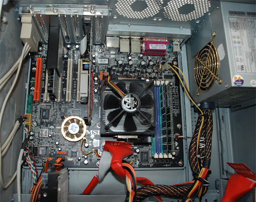

Computerbau
Beim Computerbau nehmen wir einen PC Stück für Stück auseinander und setzen ihn anschließend wieder zusammen. Dabei lernen wir die einzelnen Komponenten wie Prozessor, Arbeitsspeicher, Mainboard und Grafikkarte kennen und verstehen, wie sie zusammenarbeiten. Nachdem alle Teile wieder an ihrem Platz sind, installieren wir ein Betriebssystem und richten den Computer vollständig ein. So gewinnen wir nicht nur praktisches Wissen über die Hardware, sondern auch über die Software, die einen PC zum Laufen bringt.